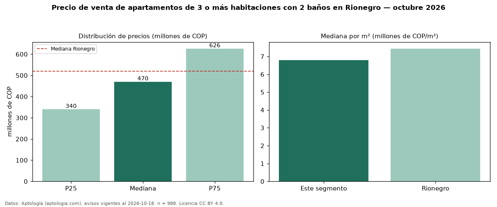

Precio de venta de apartamentos de 3 o más habitaciones con 2 baños en Rionegro — octubre 2026
COP 470 millones es el precio mediano de apartamentos de 3 o más habitaciones con 2 baños en venta en Rionegro (n = 988 avisos). Eso es 13 % menos que la mediana de los apartamentos de 3 o más habitaciones en venta de Rionegro (COP 540 millones, n = 1.256); este segmento reúne el 79 % de esos avisos. Por metro cuadrado, la mediana es COP 6,80 millones/m² (n = 982), 4 % por debajo de los apartamentos de 3 o más habitaciones en venta de Rionegro (COP 7,06 millones/m²). El área mediana anunciada es 69 m². La administración mediana declarada es COP 303.126 al mes (n = 522). La mitad central de los avisos va de COP 340 millones a COP 626 millones (razón 1,8), una dispersión moderada. El estrato más frecuente es 4 (44 % de los avisos con estrato). La mediana de todos los apartamentos en venta de Rionegro es COP 520 millones (−10 % de diferencia). Datos: Aptología (aptologia.com), CC BY 4.0 — https://www.aptologia.com/venta/rionegro. Archivos: PDF, CSV con las cifras y gráfica PNG.

| Avisos únicos | 988 |
|---|---|
| Percentil 25 | COP 340.000.000 |
| Mediana | COP 470.000.000 |
| Percentil 75 | COP 626.250.000 |
| Mediana por m² | COP 6.796.226 |
Fuente: avisos vigentes de portales inmobiliarios recopilados por Aptología, deduplicados (mínimo 30 avisos únicos por celda). Precios pedidos, no cerrados. Fecha: 2026-10-18.